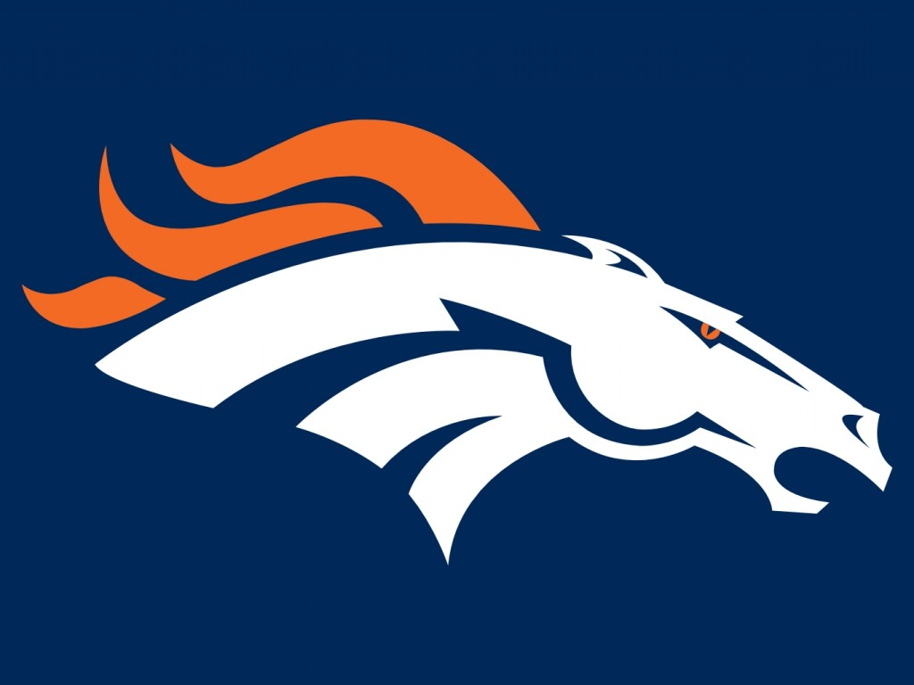

The 2013 Denver Broncos season was the franchise's 44th season in the National Football League and the 54th overall. It also marked the 30th under the ownership of Pat Bowlen, the second with Peyton Manning as the team's starting quarterback and the third under head coach John Fox. Following a heartbreaking loss to the eventual Super Bowl champion Baltimore Ravens in the divisional round of the 2012 playoffs, the Broncos entered the 2013 season as favorites to win Super Bowl XLVIII. However, the team underwent a tumultuous offseason that was dominated by the suspension of All-Pro linebacker Von Miller as well as several injuries to the offensive line. Notable offseason additions include the free agent acquisitions of wide receiver Wes Welker, linebacker Shaun Phillips, safety Quentin Jammer and cornerback Dominique Rodgers-Cromartie. Roster departures include wide receiver Brandon Stokley, linebackers Elvis Dumervil and D. J. Williams, and running back Willis McGahee. Throughout the regular season, numerous individual, team and franchise records were set, including Peyton Manning setting new NFL records for passing touchdowns and passing yardage, as well as the team setting new NFL records for touchdowns and points scored in a single season. During the team's mid-season bye week, head coach John Fox received a health scare that resulted in Fox missing four games due to recuperation from heart surgery. Defensive coordinator Jack Del Rio served as the team's interim head coach during Fox's absence. The Broncos won their third consecutive AFC West division title, as well as earning a first-round bye and homefield advantage throughout the playoffs for a second consecutive season. The Broncos defeated the San Diego Chargers 24 to 17 in the Divisional round, the New England Patriots 26 to 16 in the AFC championship game, and faced the Seattle Seahawks in Super Bowl XLVIII the Broncos' first Super Bowl berth since winning back-to-back Super Bowls in 1997 and 1998.
